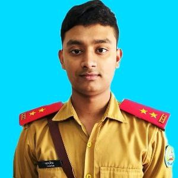

Resume of Tasnim Ashraf

Summary:
I am a software engineering student and knowledge seeker. I want to learn new technologies and love to code.
Education:
- Bacherlor of science(ENgg) in Software Engineering-IUT
- HSC- Cumilla Cadet College
- SSC- Cumilla Cadet College
Work Experience:
AS I am an undergrade student, till now I don't have any work Experience. But I was connected with many clubs during my higher secondary life.As I was a cadet , at cadet college I was House Prefect to manage the whole house and its cadets.
Skills
- Expertise in C,C++,C# programming langugae
- Have good hand on .Net Framework and have 6 projects on that
- Object Oriented Programming skills
- Problem solver on codeforce
- Have basic knowledge on Microsoft Access Database
- Do have good skills on Microsoft Power Point
- Having good communication and presentation skills
- Organizational Skills
Awards and Certificates:
- Current Affairs Display Competition presentation runner up
- Inter House Quiz Competition-Champion
- Regional Physics Olympiad Participation
- ICT quiz Competition
- Regional Math Olympiad Competition
- Special Mention on Cadetship
Others